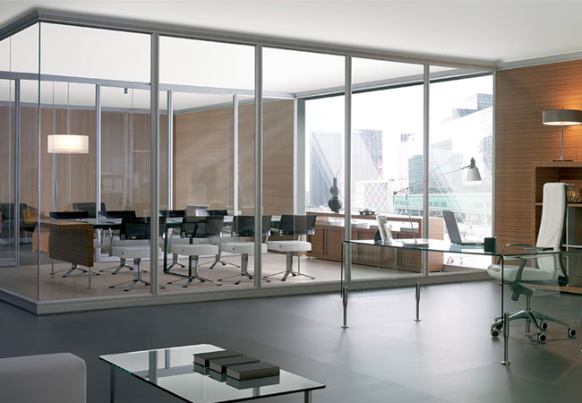
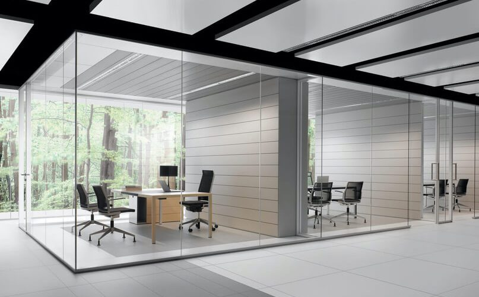

Oficinas
En Elite Way School, nos comprometemos a mantener un ambiente de transparencia y confianza tanto para nuestros estudiantes como para nuestros profesores. Todas las oficinas de los profesores, así como la oficina principal del director y la sala de maestros, están diseñadas con paredes de vidrio lucido. Esta arquitectura abierta permite que cualquier persona que pase por ahí pueda ver lo que sucede en el interior, asegurando que se mantenga un entorno de trabajo y estudio seguro y sin indiscreciones.
La visibilidad completa de estas oficinas no solo fomenta la transparencia, sino que también crea un ambiente de apertura y accesibilidad. Los estudiantes pueden sentirse seguros al acercarse a sus profesores, sabiendo que siempre hay visibilidad y que se promueve un comportamiento profesional en todo momento. Este diseño también facilita una comunicación más fluida y una interacción constante entre todos los miembros de la comunidad escolar.
En Elite Way School, creemos que la confianza y la seguridad son pilares fundamentales para una educación efectiva y un ambiente laboral saludable. Por ello, nuestras instalaciones están diseñadas para reflejar estos valores, asegurando que todos nuestros estudiantes y personal se sientan cómodos y respetados en todo momento.
 